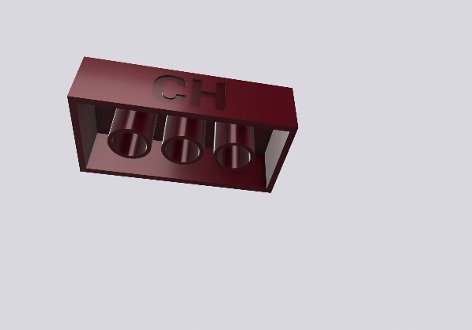
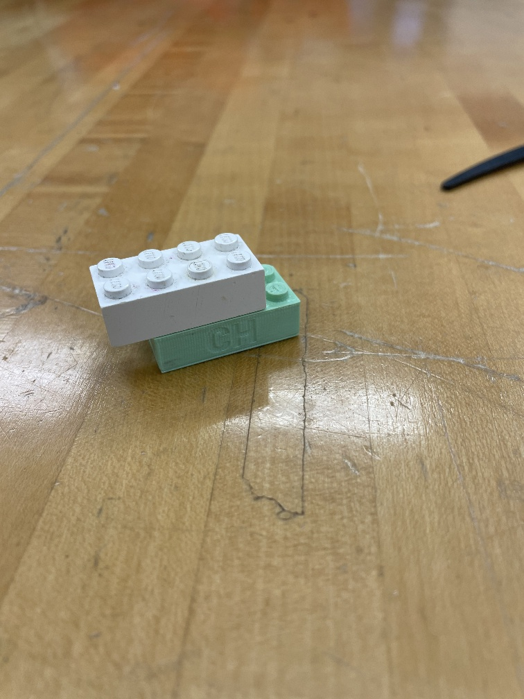
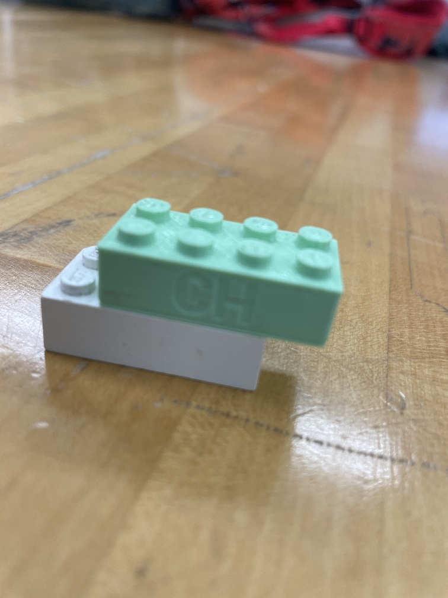
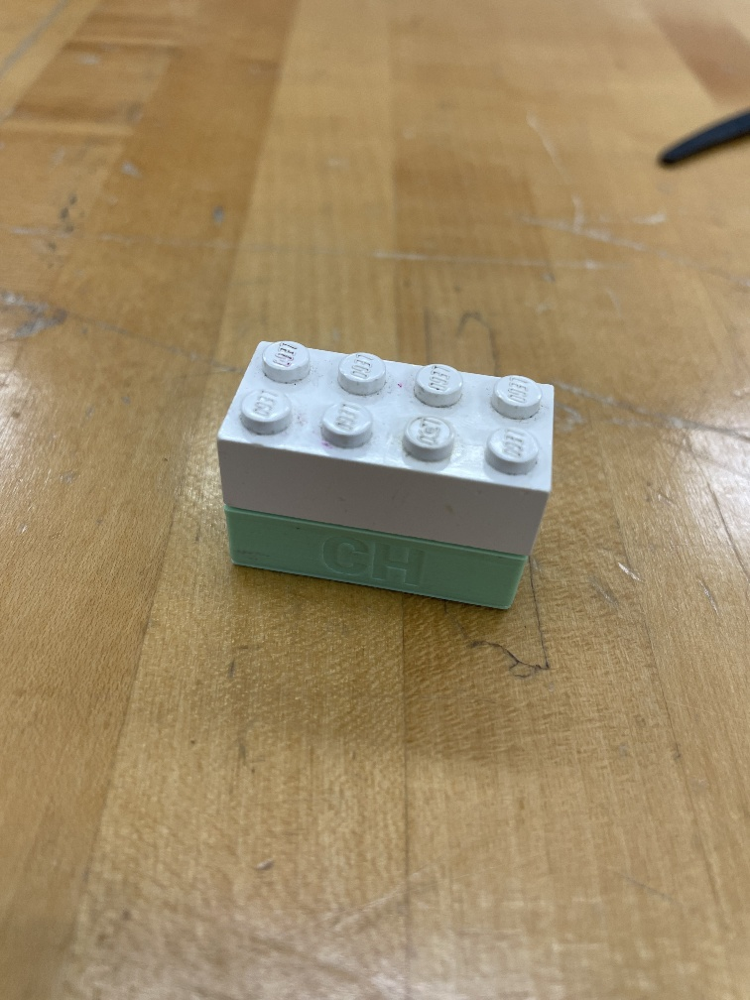

Precision CAD Models
Summary
In this project, I 3D printed a custom Lego brick that is accurate and precise to existing Lego blocks. This enables rapid prototyping for compatible custom designs. This project was primarily done as a way to learn both CAD modeling and 3D Printing. The end result was a product that connected snugly to commercial Lego bricks with narrow tolerance.
Background
In many industries, Reverse Engineering existing components is common practice. This is done to learn how something works that way someone can Repair, Reconstruct, or Troubleshoot issues with an existing part. For this project the goal was to Reconstruct the part. To do so this would require careful measurement, accurate sketching, and careful consideration of material choice. In general, researching for all available data on the part is a great first step that can save a lot of time. However, for this project the goal was to not rely on existing information and focus on building strong skills for replicating objects without researching as it is a useful skill.
Measuring
The measurements were obtained using a vernier caliper. the data collected were as follows: 31.8mm long, 15.8mm wide, 11.4mm tall (including studs), 1.2mm border, 4.8mm stud diameter, 6.51mm peg diameter, 7.98mm between each stud.Before moving on after gathering all the measurements, a quick check with available research was done to assess the accuracy to the true dimensions. The data gather happened to fall within the tolerances. The percent error between the distance between studs was -0.25%. All other values were identical to the theoretical measurements from the original patent. This was promising and illustrated that things were going on the right track. A key note about doing so is that while in this case I cross-referenced the data none of the official values were used. This was primally done as a sanity check but regardless if the results could not have been used. Doing so is a great way to assess the calibration and reliability of the tools used. This step may not always be available.
2D Sketch

Note that final submission required initials added onto the print which was not added onto the sketch.
This sketch displays the Top, Bottom, and Front planes of the model. Each sketch plane consisted of a combination of simple shapes. The diameter and height of each stud was 4.8mm and 1.8mm respectively. The dimensions of the box portion was 15.8mm Wide, 31.8mm Long, and 9.6mm Tall. The central peg holes on the under side of the part had an inner diameter of 4.8mm and an outer diameter of 6.51mm.
3D Model
Top 3/4 view of final CAD model.
Bottom 3/4 view of final CAD model.
This section displays the final CAD model of the Lego brick with a red plastic material visualization. This enables the part to look closer to the final print.
3D Printing
Top connectivity
Bottom connectivity
Full connectivity
This section displays the final 3D Print of the CAD model. This final print was printed with pale green PLA plastic with an infill of 20%. As shown in the images above, the print connected just fine to the top and bottom of the print. The print was also capable of being perfectly aligned with an existing Lego Brick.